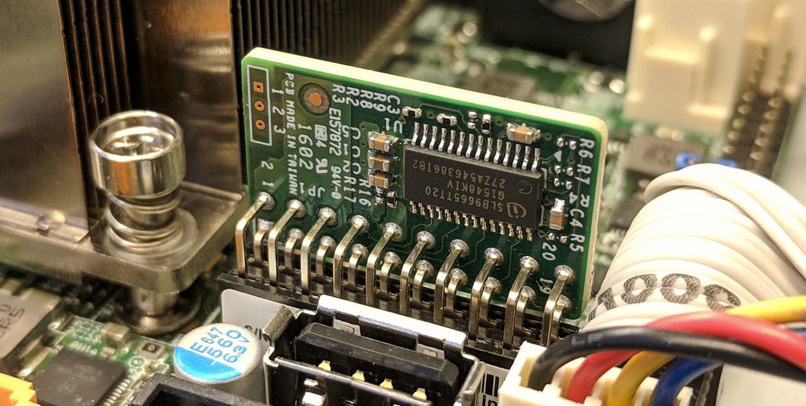

Remote Attestation

When the user wants to connect to another computer over the network, they typicaly authenticate with a password and some sort of two factor token to prove to the remote system that they are authorized to make the connection. In high assurance applications, however, it is also important that the local computer be able to attest to the remote server that the local computer itself is both authorized and is also in a known configuration.
The TPM provides a mechanism to do this sort of remote attestation,
similar to the way that the disk encryption keys are "sealed" based
on the PCRs and only decrypted if the platform configuration matches
the sealed values. The tpm2-tools package has many of the pieces,
but it is at too low a level for humans to use. Other parts of the
validation exist in the openssl package, but again are not easily
used and require format conversions from the TPM formats.
tpm2-attest attempts to wrap all of the various parts of
those two packages into a simple script that provides the four
main attestation functions: sign a quote, validate a signed quote,
seal a secret for a specific TPM, and unseal it with that TPM.
tl;dr
- Client: Get
$nonceand$pcrsfrom server - Client:
tpm2-attest $nonce $pcrs > quote.tgz - Client: Send
quote.tgzto server - Server:
tpm2-attest verify-and-seal quote.tgz $nonce < secret.txt > cipher.bin - Server: Send
cipher.binto client - Client:
tpm2-attest unseal < cipher.bin > secret.txt - Client: Use
secret.txtto decrypt disk, authenticate to network, etc
Attestation protocol
The protocol requires a few round-trips between the local machine
(the client) and the remote attestation machine (the server), and all
comunication between the Client and the Server can be in the clear.
There is no sensitive data exchanged -- the quote.tgz file contains
only public keys and PCR values that are essentially public, and the
cipher.bin reply is encrypted with the TPM's Endorsement Key, so it
should only be unsealable by that specific TPM.
A MITM could substitute a different EK/AK pair, although this does not allow them to masquarade as the TPM of the attesting machine since they do not have the EK for that TPM, and the real TPM won't be able to decrypt the response from the attestation server since it would be encrypted with the wrong EK.
The keys involved are:
- CA Root, stored hopefully securely by the CA
- TPM Manufacturer key, a signing-only key signed by the CA Root, and stored hopefully securely by the OEM
- TPM Endorsement key (
EK), an encryption key, generated in the TPM(?) and stored in the TPM hardware device - TPM Endorsement certificate (
ek.crt), signed by the TPM manufacturer, often stored in the TPM NVRAM - Attestation Key (
AK), a signing-only key generated by the TPM, but not signed by it (for inexplicable reasons), used to sign the PCR quotes
The protocol between the client and the server goes in four phases: communication initiation, quote signing, quote validation, and secret sealing
Initiation
- Client contacts the attestation server, requests a nonce that is used to prevent reply attacks, and the list of PCRs to be signed.
- Server sends the nonce (in the clear is fine, since it is literally a random number)
Quote signing
tpm2-attest quote $nonce $pcrs > quote.tgz
With this command the client machine will:
- Extracts the public part of the TPM Endorsement Key and the x509 certificate signed by the TPM manufacturer
- Generates a signing-only Attestation Key (
AK) inside the TPM and exports the public key (ak.pub) - Uses the TPM to sign a "quote" of the requested PCRs plus the nonce with the Attestation Key
- Extract the TPM event log and IMA event log, if they are available
- Bundle up all of the pieces into a tar file:
ek.crt,ek.pub,ak.pub,quote.sig,quote.pcr,quote.msg,eventlogand thenonce
The Client then sends this quote file to the Server.
Quote validation
When the Server receives the quote file from the client, it runs:
tpm2-attest verify quote.tgz $nonce
With this command the server will:
- Validates the SSL certificate chain on the client TPM EK cert to ensure that it came from a real TPM
- Validates that the quote is signed by the AK with the correct nonce (if the nonce is not checked, then this could be a replay attack by the Client)
- Server optionally consults its list of previously enrolled devices to verify that this EK is in an owner controlled machine
- Server optionally validates that the PCRs match the expected values
- Server optoinally validates that the TPM event log produces the set of PCR values in the quote
If the command fails, then something is likely wrong on the Client side and requires remediation. The Server should not proceed to sealing a secret for the Client.
Suprisingly, the Attestation Key is not signed by the Endorsement Key,
so the Server has to check the EK certificate to ensure that it came from
a real TPM. Additional, the Server must check the AK attributes to ensure
that it has fixedtpm and sensitivedataorigin set, which indicates that
the AK was generated inside the TPM. Even with these checks, the Server is
still trusting that the TPM hardware implements tpm2_activatecredential
with all of these checks correctly done, since the sealed data is encrypted
with the EK, not the AK. (Like many things with the TPM2, this is a really
baroque way to organize the keys).
Secret sealing
Assuming the validation passed, the server can seal secret data such that only the TPM that produced the signed attestation will be able to unseal it, and has faith that the TPM will not unseal it if it has been reset (to prevent attacks that reboot into untrusted firmware):
cat secret.txt | tpm2-attest seal quote.tgz > cipher.bin
With this command the Server will:
- Encrypt a secret message (which could be a disk encryption key, a network access token, or whatever) with the TPM's EK, along with the hash of the AK.
The Server then sends this encrypted blob to the Client.
Note that there is a verify-and-seal that combines both the quote validation
and the sealing of the data to the attestation key in one step:
cat secret.txt | tpm2-attest seal quote.tgz $nonce > cipher.bin
Secret unsealing
Once the Client receives the sealed blob from the Server, it attempts to unseal it with the Attestation Key context that is left over from the initial quote signing:
cat cipher.bin | tpm2-attest unseal ak.ctx > secret.txt
With this command, the Client and TPM will:
- Initiates an encrypted session with the TPM and sends the blob to it.
- The TPM checks that the hash of the AK matches one that it generated and that it hasn't rebooted since then. If these checks pass, the TPM uses its private EK to decrypt the blob.
- Client receives the secret message over the encrypted channel to the TPM
At this point the Client can use the shared secret to authenticate to the Server, a network, or decrypt it's disk, or whatever. The TPM is no longer involved.
TPM OEM Certificates
A key part of the remote attestion is being able to trust that the TPM hardware
is produced by a TPM manufacturer. Much like SSL Certs for websites, the
TPM's Endorsement Key is signed by the OEM with their Intermediate CA,
which is signed by a Root CA. Unlike SSL, the Root CAs are often not in
the system's /etc/ssl/certs/ directory, and not easily accessible online.
Some OEMs publish them in datasheets
(ST TPM EK certificates),
some have online portals to select per-device intermediate certs
(Infineon Optiga certificates),
and some just say "Contact manufacturer for more details"
(Atmel/Microchip EK Configuration).
Luckily Microsoft has a CAB file with all of their approved TPM OEMs in their
guide to setting up shielded VMs.
These x509 certs are in DER format (and have a few odd ones),
so they have been converted to PEM and bundled into /etc/safeboot/certs/ for
validating the TPM attestations.
Adding new intermediate certificates
If you add your own TPM keys to the directory, you will need to re-build the symlinks
that OpenSSL uses for the -CApath:
c_rehash /etc/safeboot/certs/
TPMs without EK certificates
Unfortunately not all TPMs store their EK certs in the NVRAM;
some of them require an online query to the OEM to generate the certificate.
There is the tpm2_getmanufec program that is supposed to help with this
process, although it hasn't been integrated into this tool yet.
FAQ
Why is this a shell script?
It is often desirable to perform a remote attestion inside of an initrd,
where there aren't fancy runtimes for Python or more advanced languages.
So the quote generation needs to be written assuming very limited resources,
as does the response unsealing.
The remote attestation server side could be implemented entirely in a more civilized language, especially since the Server does not require any TPM interaction at all -- all of its work is done in software and can be run as an ordinary user.
As an example of moving some functionality into better languages, the
tpm2-eventlog-validate tool that parses the TPM2 event log and generates
expected PCR values is written in Python.
I thought remote attestation and TPMs were only for DRM?
One of the big fears in the free software community was that TPM's would be used to lockdown the devices and implement DRM. That hasn't developed in general purpose computers and mjg59's TPM guide concludes with "the current state of technology doesn't make them useful for practical limitations of end-user freedom". There's a far bigger threat to user freedom in the locked-down world of mobile devices; currently most x86 machines allow rekeying with user keys, so the software (but not the firmware) is still under owner control.
Remote Attestation can be used bidirectionally as well - it allows the server to attest to the client that the machine is in a trustworthy state. This is perhaps an even more valuable use case: you might have fairly tight physical control of your personal machine, but a bare metal server in a data center is potentially open to attacks by the cloud operator as well as the previous tenants. Having attestations as to the firmware and the OS configuration can make it more trustable.
Why is generating a quote so slow?
There is lots of traffic between the tpm2-attest program and the TPM
during the attestation process, and the TPM is not a fast device.
Read the Endorsement Key (EK) and EK Certificate take a few hundred
miliseconds, signing the quote takes another few hundred, etc.
The process used to take around 20 seconds, since the TPM had to generate
a new RSA Attestation Key (AK) to sign the PCR quote, and generating an RSA
key requires finding large primes with certain values. The AK was replaced
with ECC, which is much faster to generate.
Creating a new one each time should not be necessary; several attestation protocols
use a pregenerated AK that is persistent in the TPM, except that opens up
a race condition between generating a quote and receiving the sealed
data. The quote includes the reboot count, but the sealed data
does not reference it, so the TPM will unseal it if the AK is still
valid, even if an attacker has rebooted into an untrustworthy state
inbetween generating the quote and receiving the sealed response.
By creating an ephemeral AK (with the stclear bit set in the
attributes), the TPM will not allow it to be persisted and will refuse
to reload it when the reboot counter increments.
Discrete TPM vs fTPM?
The Discrete TPM is potentially a hardware weakpoint; a physically proximate adversary could remove the TPM from a machine and connect it to an untrusted device and then masquarade as the device to which the TPM had been connected. This would also potentially allow them to extract any sealed disk encryption keys, as described on the threat model page, and is one of the advantages of an fTPM inside the Management Engine.
A proximate attacker could also interfere with the LPC or i2c bus of a Discrete TPM using something like the TPM Genie, which allow them to both modify the hashes sent to the TPM during PCR extension operations, and read the unsealed secrets when they are returned if the TPM didn't support secret sessions.
However, the fTPM is a pure-software application inside the ME and potentially allows an attacker with code execution on the ME to find the sealing secrets that are used to protect the TPM keys in the ME NVRAM, which would allow attacks against the quoting and attestation process.